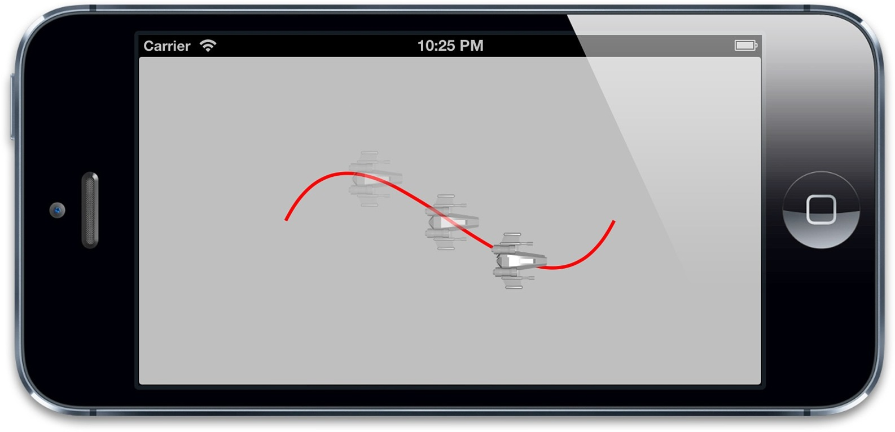
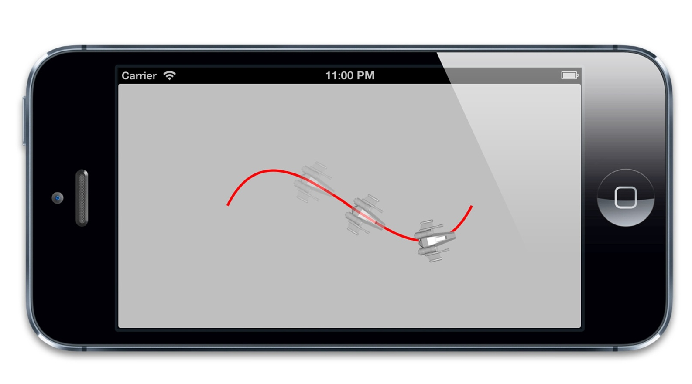

CAAnimationDelegate在任何头文件中都找不到，但是可以在CAAnimation头文件或者苹果开发者文档中找到相关函数。在这个例子中，我们用-animationDidStop:finished:方法在动画结束之后来更新图层的backgroundColor。
当更新属性的时候，我们需要设置一个新的事务，并且禁用图层行为。否则动画会发生两次，一个是因为显式的CABasicAnimation，另一次是因为隐式动画，具体实现见订单8.3。
清单8.3 动画完成之后修改图层的背景色
@implementation ViewController
- (void)viewDidLoad
{
[super viewDidLoad];
//create sublayer
self.colorLayer = [CALayer layer];
self.colorLayer.frame = CGRectMake(50.0f, 50.0f, 100.0f, 100.0f);
self.colorLayer.backgroundColor = [UIColor blueColor].CGColor;
//add it to our view
[self.layerView.layer addSublayer:self.colorLayer];
}
- (IBAction)changeColor
{
//create a new random color
CGFloat red = arc4random() / (CGFloat)INT_MAX;
CGFloat green = arc4random() / (CGFloat)INT_MAX;
CGFloat blue = arc4random() / (CGFloat)INT_MAX;
UIColor *color = [UIColor colorWithRed:red green:green blue:blue alpha:1.0];
//create a basic animation
CABasicAnimation *animation = [CABasicAnimation animation];
animation.keyPath = @"backgroundColor";
animation.toValue = (__bridge id)color.CGColor;
animation.delegate = self;
//apply animation to layer
[self.colorLayer addAnimation:animation forKey:nil];
}
- (void)animationDidStop:(CABasicAnimation *)anim finished:(BOOL)flag
{
//set the backgroundColor property to match animation toValue
[CATransaction begin];
[CATransaction setDisableActions:YES];
self.colorLayer.backgroundColor = (__bridge CGColorRef)anim.toValue;
[CATransaction commit];
}
@end
对CAAnimation而言，使用委托模式而不是一个完成块会带来一个问题，就是当你有多个动画的时候，无法在在回调方法中区分。在一个视图控制器中创建动画的时候，通常会用控制器本身作为一个委托（如清单8.3所示），但是所有的动画都会调用同一个回调方法，所以你就需要判断到底是那个图层的调用。
考虑一下第三章的闹钟，“图层几何学”，我们通过简单地每秒更新指针的角度来实现一个钟，但如果指针动态地转向新的位置会更加真实。
我们不能通过隐式动画来实现因为这些指针都是UIView的实例，所以图层的隐式动画都被禁用了。我们可以简单地通过UIView的动画方法来实现。但如果想更好地控制动画时间，使用显式动画会更好（更多内容见第十章）。使用CABasicAnimation来做动画可能会更加复杂，因为我们需要在-animationDidStop:finished:中检测指针状态（用于设置结束的位置）。
动画本身会作为一个参数传入委托的方法，也许你会认为可以控制器中把动画存储为一个属性，然后在回调用比较，但实际上并不起作用，因为委托传入的动画参数是原始值的一个深拷贝，从而不是同一个值。
当使用-addAnimation:forKey:把动画添加到图层，这里有一个到目前为止我们都设置为nil的key参数。这里的键是-animationForKey:方法找到对应动画的唯一标识符，而当前动画的所有键都可以用animationKeys获取。如果我们对每个动画都关联一个唯一的键，就可以对每个图层循环所有键，然后调用-animationForKey:来比对结果。尽管这不是一个优雅的实现。
幸运的是，还有一种更加简单的方法。像所有的NSObject子类一样，CAAnimation实现了KVC（键-值-编码）协议，于是你可以用-setValue:forKey:和-valueForKey:方法来存取属性。但是CAAnimation有一个不同的性能：它更像一个NSDictionary，可以让你随意设置键值对，即使和你使用的动画类所声明的属性并不匹配。
这意味着你可以对动画用任意类型打标签。在这里，我们给UIView类型的指针添加的动画，所以可以简单地判断动画到底属于哪个视图，然后在委托方法中用这个信息正确地更新钟的指针（清单8.4）。
清单8.4 使用KVC对动画打标签
@interface ViewController ()
@property (nonatomic, weak) IBOutlet UIImageView *hourHand;
@property (nonatomic, weak) IBOutlet UIImageView *minuteHand;
@property (nonatomic, weak) IBOutlet UIImageView *secondHand;
@property (nonatomic, weak) NSTimer *timer;
@end
@implementation ViewController
- (void)viewDidLoad
{
[super viewDidLoad];
//adjust anchor points
self.secondHand.layer.anchorPoint = CGPointMake(0.5f, 0.9f);
self.minuteHand.layer.anchorPoint = CGPointMake(0.5f, 0.9f);
self.hourHand.layer.anchorPoint = CGPointMake(0.5f, 0.9f);
//start timer
self.timer = [NSTimer scheduledTimerWithTimeInterval:1.0 target:self selector:@selector(tick) userInfo:nil repeats:YES];
//set initial hand positions
[self updateHandsAnimated:NO];
}
- (void)tick
{
[self updateHandsAnimated:YES];
}
- (void)updateHandsAnimated:(BOOL)animated
{
//convert time to hours, minutes and seconds
NSCalendar *calendar = [[NSCalendar alloc] initWithCalendarIdentifier:NSGregorianCalendar];
NSUInteger units = NSHourCalendarUnit | NSMinuteCalendarUnit | NSSecondCalendarUnit;
NSDateComponents *components = [calendar components:units fromDate:[NSDate date]];
CGFloat hourAngle = (components.hour / 12.0) * M_PI * 2.0;
//calculate hour hand angle //calculate minute hand angle
CGFloat minuteAngle = (components.minute / 60.0) * M_PI * 2.0;
//calculate second hand angle
CGFloat secondAngle = (components.second / 60.0) * M_PI * 2.0;
//rotate hands
[self setAngle:hourAngle forHand:self.hourHand animated:animated];
[self setAngle:minuteAngle forHand:self.minuteHand animated:animated];
[self setAngle:secondAngle forHand:self.secondHand animated:animated];
}
- (void)setAngle:(CGFloat)angle forHand:(UIView *)handView animated:(BOOL)animated
{
//generate transform
CATransform3D transform = CATransform3DMakeRotation(angle, 0, 0, 1);
if (animated) {
//create transform animation
CABasicAnimation *animation = [CABasicAnimation animation];
[self updateHandsAnimated:NO];
animation.keyPath = @"transform";
animation.toValue = [NSValue valueWithCATransform3D:transform];
animation.duration = 0.5;
animation.delegate = self;
[animation setValue:handView forKey:@"handView"];
[handView.layer addAnimation:animation forKey:nil];
} else {
//set transform directly
handView.layer.transform = transform;
}
}
- (void)animationDidStop:(CABasicAnimation *)anim finished:(BOOL)flag
{
//set final position for hand view
UIView *handView = [anim valueForKey:@"handView"];
handView.layer.transform = [anim.toValue CATransform3DValue];
}
我们成功的识别出每个图层停止动画的时间，然后更新它的变换到一个新值，很好。
不幸的是，即使做了这些，还是有个问题，清单8.4在模拟器上运行的很好，但当真正跑在iOS设备上时，我们发现在-animationDidStop:finished:委托方法调用之前，指针会迅速返回到原始值，这个清单8.3图层颜色发生的情况一样。
问题在于回调方法在动画完成之前已经被调用了，但不能保证这发生在属性动画返回初始状态之前。这同时也很好地说明了为什么要在真实的设备上测试动画代码，而不仅仅是模拟器。
我们可以用一个fillMode属性来解决这个问题，下一章会详细说明，这里知道在动画之前设置它比在动画结束之后更新属性更加方便。
CABasicAnimation揭示了大多数隐式动画背后依赖的机制，这的确很有趣，但是显式地给图层添加CABasicAnimation相较于隐式动画而言，只能说费力不讨好。
CAKeyframeAnimation是另一种UIKit没有暴露出来但功能强大的类。和CABasicAnimation类似，CAKeyframeAnimation同样是CAPropertyAnimation的一个子类，它依然作用于单一的一个属性，但是和CABasicAnimation不一样的是，它不限制于设置一个起始和结束的值，而是可以根据一连串随意的值来做动画。
关键帧起源于传动动画，意思是指主导的动画在显著改变发生时重绘当前帧（也就是关键帧），每帧之间剩下的绘制（可以通过关键帧推算出）将由熟练的艺术家来完成。CAKeyframeAnimation也是同样的道理：你提供了显著的帧，然后Core Animation在每帧之间进行插入。
我们可以用之前使用颜色图层的例子来演示，设置一个颜色的数组，然后通过关键帧动画播放出来（清单8.5）
清单8.5 使用CAKeyframeAnimation应用一系列颜色的变化
- (IBAction)changeColor
{
//create a keyframe animation
CAKeyframeAnimation *animation = [CAKeyframeAnimation animation];
animation.keyPath = @"backgroundColor";
animation.duration = 2.0;
animation.values = @[
(__bridge id)[UIColor blueColor].CGColor,
(__bridge id)[UIColor redColor].CGColor,
(__bridge id)[UIColor greenColor].CGColor,
(__bridge id)[UIColor blueColor].CGColor ];
//apply animation to layer
[self.colorLayer addAnimation:animation forKey:nil];
}
注意到序列中开始和结束的颜色都是蓝色，这是因为CAKeyframeAnimation并不能自动把当前值作为第一帧（就像CABasicAnimation那样把fromValue设为nil）。动画会在开始的时候突然跳转到第一帧的值，然后在动画结束的时候突然恢复到原始的值。所以为了动画的平滑特性，我们需要开始和结束的关键帧来匹配当前属性的值。
当然可以创建一个结束和开始值不同的动画，那样的话就需要在动画启动之前手动更新属性和最后一帧的值保持一致，就和之前讨论的一样。
我们用duration属性把动画时间从默认的0.25秒增加到2秒，以便于动画做的不那么快。运行它，你会发现动画通过颜色不断循环，但效果看起来有些奇怪。原因在于动画以一个恒定的步调在运行。当在每个动画之间过渡的时候并没有减速，这就产生了一个略微奇怪的效果，为了让动画看起来更自然，我们需要调整一下缓冲，第十章将会详细说明。
提供一个数组的值就可以按照颜色变化做动画，但一般来说用数组来描述动画运动并不直观。CAKeyframeAnimation有另一种方式去指定动画，就是使用CGPath。path属性可以用一种直观的方式，使用Core Graphics函数定义运动序列来绘制动画。
我们来用一个宇宙飞船沿着一个简单曲线的实例演示一下。为了创建路径，我们需要使用一个三次贝塞尔曲线，它是一种使用开始点，结束点和另外两个控制点来定义形状的曲线，可以通过使用一个基于C的Core Graphics绘图指令来创建，不过用UIKit提供的UIBezierPath类会更简单。
我们这次用CAShapeLayer来在屏幕上绘制曲线，尽管对动画来说并不是必须的，但这会让我们的动画更加形象。绘制完CGPath之后，我们用它来创建一个CAKeyframeAnimation，然后用它来应用到我们的宇宙飞船。代码见清单8.6，结果见图8.1。
清单8.6 沿着一个贝塞尔曲线对图层做动画
@interface ViewController ()
@property (nonatomic, weak) IBOutlet UIView *containerView;
@end
@implementation ViewController
- (void)viewDidLoad
{
[super viewDidLoad];
//create a path
UIBezierPath *bezierPath = [[UIBezierPath alloc] init];
[bezierPath moveToPoint:CGPointMake(0, 150)];
[bezierPath addCurveToPoint:CGPointMake(300, 150) controlPoint1:CGPointMake(75, 0) controlPoint2:CGPointMake(225, 300)];
//draw the path using a CAShapeLayer
CAShapeLayer *pathLayer = [CAShapeLayer layer];
pathLayer.path = bezierPath.CGPath;
pathLayer.fillColor = [UIColor clearColor].CGColor;
pathLayer.strokeColor = [UIColor redColor].CGColor;
pathLayer.lineWidth = 3.0f;
[self.containerView.layer addSublayer:pathLayer];
//add the ship
CALayer *shipLayer = [CALayer layer];
shipLayer.frame = CGRectMake(0, 0, 64, 64);
shipLayer.position = CGPointMake(0, 150);
shipLayer.contents = (__bridge id)[UIImage imageNamed: @"Ship.png"].CGImage;
[self.containerView.layer addSublayer:shipLayer];
//create the keyframe animation
CAKeyframeAnimation *animation = [CAKeyframeAnimation animation];
animation.keyPath = @"position";
animation.duration = 4.0;
animation.path = bezierPath.CGPath;
[shipLayer addAnimation:animation forKey:nil];
}
@end

图8.1 沿着一个贝塞尔曲线移动的宇宙飞船图片
运行示例，你会发现飞船的动画有些不太真实，这是因为当它运动的时候永远指向右边，而不是指向曲线切线的方向。你可以调整它的affineTransform来对运动方向做动画，但很可能和其它的动画冲突。
幸运的是，苹果预见到了这点，并且给CAKeyFrameAnimation添加了一个rotationMode的属性。设置它为常量kCAAnimationRotateAuto（清单8.7），图层将会根据曲线的切线自动旋转（图8.2）。
清单8.7 通过rotationMode自动对齐图层到曲线
- (void)viewDidLoad
{
[super viewDidLoad];
//create a path
...
//create the keyframe animation
CAKeyframeAnimation *animation = [CAKeyframeAnimation animation];
animation.keyPath = @"position";
animation.duration = 4.0;
animation.path = bezierPath.CGPath;
animation.rotationMode = kCAAnimationRotateAuto;
[shipLayer addAnimation:animation forKey:nil];
}

图8.2 匹配曲线切线方向的飞船图层
之前提到过属性动画实际上是针对于关键路径而不是一个键，这就意味着可以对子属性甚至是虚拟属性做动画。但是虚拟属性到底是什么呢？
考虑一个旋转的动画：如果想要对一个物体做旋转的动画，那就需要作用于transform属性，因为CALayer没有显式提供角度或者方向之类的属性，代码如清单8.8所示
清单8.8 用transform属性对图层做动画
@interface ViewController ()
@property (nonatomic, weak) IBOutlet UIView *containerView;
@end
@implementation ViewController
- (void)viewDidLoad
{
[super viewDidLoad];
//add the ship
CALayer *shipLayer = [CALayer layer];
shipLayer.frame = CGRectMake(0, 0, 128, 128);
shipLayer.position = CGPointMake(150, 150);
shipLayer.contents = (__bridge id)[UIImage imageNamed: @"Ship.png"].CGImage;
[self.containerView.layer addSublayer:shipLayer];
//animate the ship rotation
CABasicAnimation *animation = [CABasicAnimation animation];
animation.keyPath = @"transform";
animation.duration = 2.0;
animation.toValue = [NSValue valueWithCATransform3D: CATransform3DMakeRotation(M_PI, 0, 0, 1)];
[shipLayer addAnimation:animation forKey:nil];
}
@end
这么做是可行的，但看起来更因为是运气而不是设计的原因，如果我们把旋转的值从M_PI（180度）调整到2 * M_PI（360度），然后运行程序，会发现这时候飞船完全不动了。这是因为这里的矩阵做了一次360度的旋转，和做了0度是一样的，所以最后的值根本没变。
现在继续使用M_PI，但这次用byValue而不是toValue。也许你会认为这和设置toValue结果一样，因为0 + 90度 == 90度，但实际上飞船的图片变大了，并没有做任何旋转，这是因为变换矩阵不能像角度值那样叠加。
那么如果需要独立于角度之外单独对平移或者缩放做动画呢？由于都需要我们来修改transform属性，实时地重新计算每个时间点的每个变换效果，然后根据这些创建一个复杂的关键帧动画，这一切都是为了对图层的一个独立做一个简单的动画。
幸运的是，有一个更好的解决方案：为了旋转图层，我们可以对transform.rotation关键路径应用动画，而不是transform本身（清单8.9）。
清单8.9 对虚拟的transform.rotation属性做动画
@interface ViewController ()
@property (nonatomic, weak) IBOutlet UIView *containerView;
@end
@implementation ViewController
- (void)viewDidLoad
{
[super viewDidLoad];
//add the ship
CALayer *shipLayer = [CALayer layer];
shipLayer.frame = CGRectMake(0, 0, 128, 128);
shipLayer.position = CGPointMake(150, 150);
shipLayer.contents = (__bridge id)[UIImage imageNamed: @"Ship.png"].CGImage;
[self.containerView.layer addSublayer:shipLayer];
//animate the ship rotation
CABasicAnimation *animation = [CABasicAnimation animation];
animation.keyPath = @"transform.rotation";
animation.duration = 2.0;
animation.byValue = @(M_PI * 2);
[shipLayer addAnimation:animation forKey:nil];
}
@end
结果运行的特别好，用transform.rotation而不是transform做动画的好处如下：
byValue而不是toValue）。CATransform3D，而是使用一个简单的数值来指定角度。transform.position或者transform.scale冲突（同样是使用关键路径来做独立的动画属性）。transform.rotation属性有一个奇怪的问题是它其实并不存在。这是因为CATransform3D并不是一个对象，它实际上是一个结构体，也没有符合KVC相关属性，transform.rotation实际上是一个CALayer用于处理动画变换的虚拟属性。
你不可以直接设置transform.rotation或者transform.scale，他们不能被直接使用。当你对他们做动画时，Core Animation自动地根据通过CAValueFunction来计算的值来更新transform属性。
CAValueFunction用于把我们赋给虚拟的transform.rotation简单浮点值转换成真正的用于摆放图层的CATransform3D矩阵值。你可以通过设置CAPropertyAnimation的valueFunction属性来改变，于是你设置的函数将会覆盖默认的函数。
CAValueFunction看起来似乎是对那些不能简单相加的属性（例如变换矩阵）做动画的非常有用的机制，但由于CAValueFunction的实现细节是私有的，所以目前不能通过继承它来自定义。你可以通过使用苹果目前已经提供的常量（目前都是和变换矩阵的虚拟属性相关，所以没太多使用场景了，因为这些属性都有了默认的实现方式）。